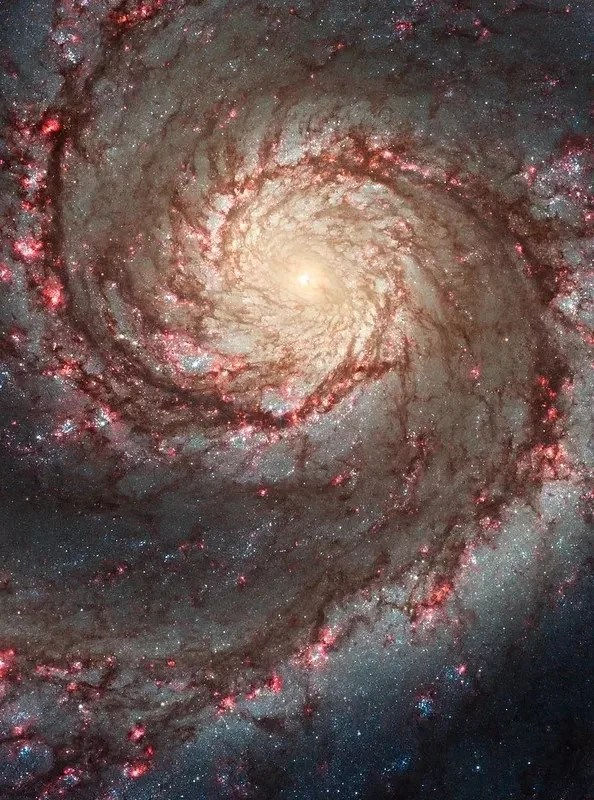

Dark matter
Mass we cannot see with light.
Galaxies and clusters behave as if extra gravitating mass is present. We infer it from motion, lensing and cosmic structure—but we still do not know what it is made of.
- We can measure
- its gravitational effects
- We still do not know
- its microscopic identity